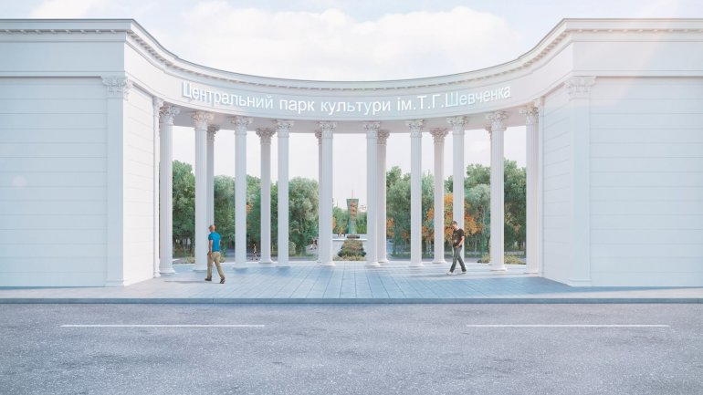
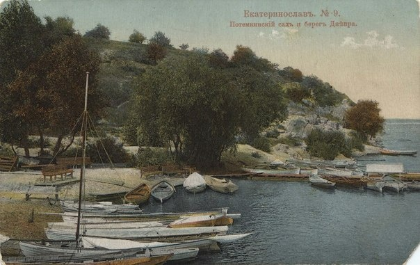
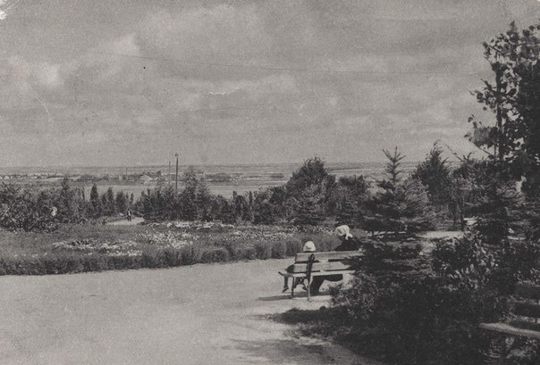
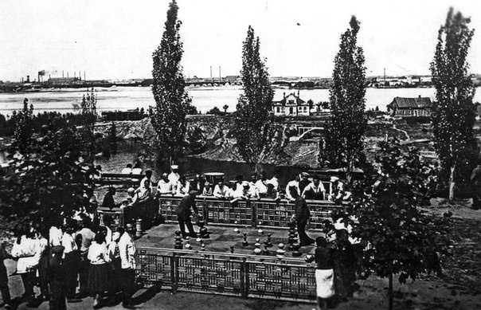

Парк имени Шевченка
Парк культуры и отдыха им. Т. Г. Шевченко (с 1790-х до 1925 года — Потёмкинский сад) — центральный и старейший парк города Днепр. Адрес: пл. Шевченко, 1. Один из двух главных садово-парковых комплексов Екатеринослава — Днепропетровска — Днепра (наряду с парком Глобы). Насчитывает около 8000 деревьев и более 2000 кустарников 68 видов. Площадь парка вместе с Монастырским островом — 36 га. Делится на береговую и островную части. Береговая часть: Летний театр (лекторий сооруженный в 1977 г. по проекту архитектора П. Р. Ниринберга, Потёмкинский дворец, ныне — Дворец Студентов ДНУ, несколько игровых площадок, в частности теннисные корты. Установлен бюст В. П. Каруны. Есть памятник "Скорбящая". Также есть скульптурная группа "Олени" и металлический лев. Имелась скульптура Сталина. На острове расположены: зоопарк, аквариум пресноводных рыб, аттракционы, несколько водноспортивных клубов и баз, где можно взять напрокат лодку. В нижней части острова расположены пляжи.
История Парка

В 1743 году отставной есаул запорожского войска Лазарь Глоба поселился напротив Монастырского острова. Глоба посвятил себя садоводству. Первый сад с лесными и плодовыми деревьями он основал вокруг своего жилища – сейчас это северо-восточная часть парка Шевченко. Второй его сад, в нижней приднепровской части, тоже стал парком и сегодня носит его имя.
В 1787-89 годах приглашенный из Петербурга зодчий Иван Старов строит на территории бывшего сада Глобы дворец в стиле классицизм – ныне Дворец студентов. Дворец Потемкина много повидал на своем веку, дважды подвергался сильным разрушениям и дважды реконструировался. Это старейшее каменное сооружение нашего города. Новое время диктовало новые приоритеты. Сад Глобы уступил место английскому пейзажному парку, для устройства которого Потемкин вызвал из Петербурга английского садовника Вильяма Гулда. В 1789-91 годах под руководством Гулда был создан пейзажный парк с роскошными оранжереями. Растительность для парка направлялась из трех мест. Из белорусского имения Потемкина Дубровны доставили обширную оранжерею вместе с 29 садовниками. Из Молдавии привезли большие фруктовые деревья и 12 фур виноградных лоз, с болгарами-виноградарями. Из Кременчуга был перевезен фруктовый сад с яблонями, вишнями, грушами и грецкими орехами.

Историк Константин Корольков, описывая это великолепие, замечает: "Вокруг дома находился обширный редкий сад, в котором было две оранжереи: одна ананасовая, другая же состояла из лавровых, померанцевых, лимонных, апельсинных, гранатных, финиковых и других иностранных деревьев; ветви некоторых деревьев простирались во все стороны на несколько десятков аршин". В 1797 году в огромной оранжерее насчитывалось 507 деревьев: "лавры, померанцы обыкновенные, померанцы дикие, померанцы аранские, апельсины, помаданы, лимоны, кателеры, фиги, миртусы, лаврусы, цынусы, розаны, гранаты, таксы, флюсы, пансонисы, ананасы, жасмины, цересы, цыпрезусы, пуртулаки, персики, абрикосы. При этом некоторых деревьев по одному экземпляру, а некоторых больше ста, как, например, диких померанцев 191 дерево". Глядя сегодня на этот список, и не поймешь, что за диковинные растения украшали резиденцию Потемкина.
